薬研堀不動尊。
でっかいカモメジュースのパックがお供えされてますがな。
薬研堀不動尊。
でっかいカモメジュースのパックがお供えされてますがな。
{kind=link}
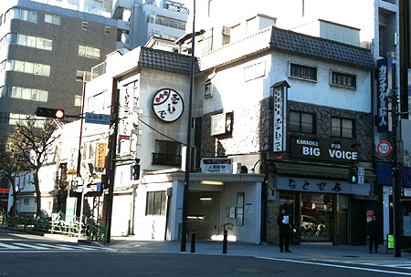
親子丼で有名な玉ひで。 まあまあ美味しいと思うけど、行列は苦手。{kind=link}
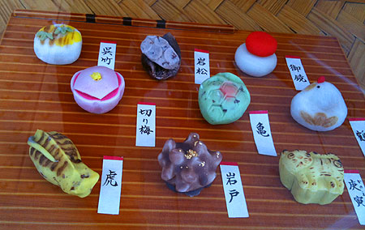
カラフルな和菓子を愛でる。 虎がゆるいなー 食いしん坊の、コドモ時代のわたくしは、油粘土で和菓子もどきを作ってうっとりしてましたとさ。 粘土ベラをクイックイッと動かして菊の文様とか作ってた。 あのまま突き詰めていたら、今は和菓子職人とゆー道もあったのかもなー…と。{kind=link}
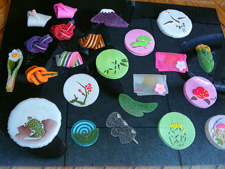
干菓子。 見るのはいいけど、このグラニュー糖まぶしがー。 必要なデコレーションなのかなー？{kind=link}
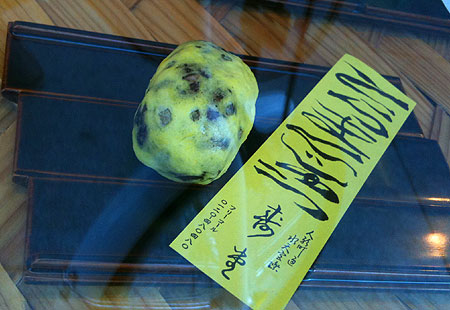
虎がゆるいー いいなーこの和菓子フォント。 和菓子も前衛とゆー波が来ているのかね。{kind=link}
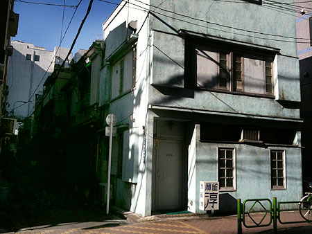
麻雀放浪記に出てきそうな雀荘。 牌を叩きつける乾いた音がしそう。{kind=link}
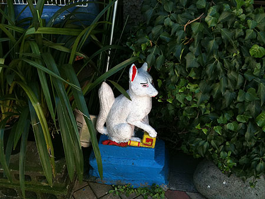
手作りのお稲荷さん。 …で、迷う。 人形町、水天宮、浜町のあたりでぐるぐる。{kind=link}
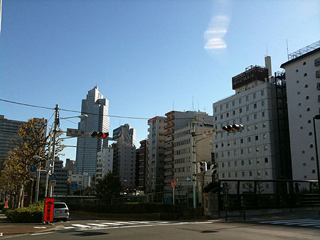
気がついたら飛ばされて新富町。 あれー？ ここで分岐。築地に行くか銀座に行くかー？{kind=link}
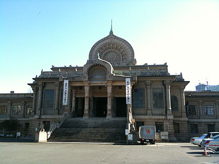
ーと、本願寺。{kind=link}
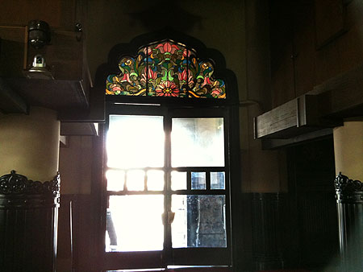
くるっと振り向いてステンドグラス。{kind=link}
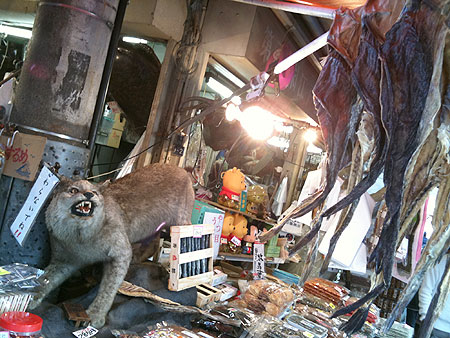
そのまま築地市場に。 場外は日曜でもそこそこ賑わっているのね。年末だから？ つーか、この有名な乾物剥製屋、干物を狙ってるよー！{kind=link}
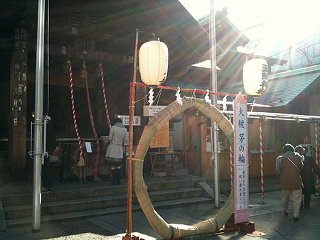
波除神社でぐるぐるくぐる。{kind=link}
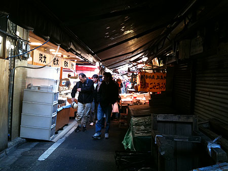
市場はやっぱり閉まっている店も多いんだけどね。 生牡蠣350円。 その場でくるっと剥いてくれるんだけど、お酒が無いのがなー。素直にあきらめる。 それにしても、昔の場外と比べて、海鮮丼屋が増えたよーな。 見るだけ見て、特に何を買うわけでもなくぐるぐるして銀座に向かう。。。が年末の大混雑！！ 裏手を回って、丸の内。 牛もクリスマス。 このラウンジ使い勝手が良さそうだなー。{kind=link}
{kind=link}
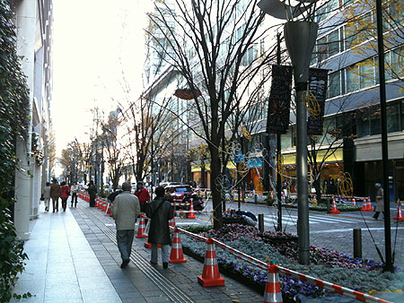
冬支度の丸の内。 自転車乗り降り繰り返して、あちこち店内をのぞいてみたり。 …ポタで悩むのは、こーゆーときでも問題の無い服装かつ、自転車に乗りやすい服装。{kind=link}
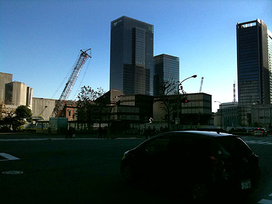
東京駅まで出てきて、帰宅モード。 日本橋でせんとくんに出会った。 もう、すっかり定着した感があるよね。{kind=link}
{kind=link}
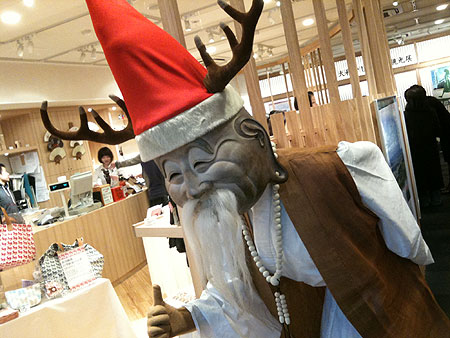
で、このひとは誰なのー？ おじーちゃん？